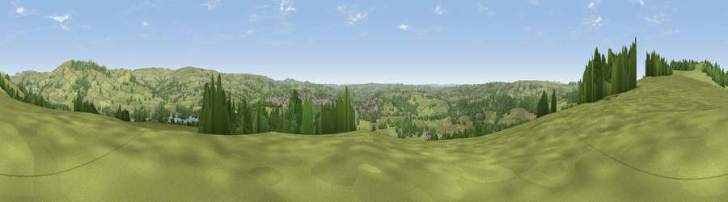

Viewpoint near Meerbrook
#18692 in England · top 27% of its area beats it · near MeerbrookThe view, rendered

A 360° render of this exact spot computed from the terrain model, tree cover and land cover — summer colours, afternoon light, calibrated against photographs of famous viewpoints. Real trees, hedges and buildings will differ in detail.
The panorama
Grey silhouette: terrain skyline in each direction (720 bearings, Earth curvature and refraction included). Dashed green: skyline with trees (+15 m) and buildings (+8 m) as obstacles. Blue strip: how far the ground is visible on each bearing.
Where the view opens
Wedge length = distance to the farthest visible ground on that bearing (vegetation-aware). Rings at 10, 25 and 50 km.
What fills the view
71% grassland · 23% woodland · 3% built-up · 2% cropland · 1% water
Angular shares of the visible panorama (visual magnitude), not map area. Landscape diversity 0.35 (0–1 Shannon).
Key numbers
More beautiful places nearby
The staircase of upgrades: each row has a higher view potential than everything closer. Driving times are estimates from straight-line distance, calibrated against real road routing — check an actual route before setting out.
| Place | Direction | Drive | Score |
|---|---|---|---|
| Gun | NNW · 2 km | ~5 min | 63.7 |
| Viewpoint near Meerbrook | NE · 4 km | ~10 min | 72.1 |
| Viewpoint near Meerbrook | NE · 4 km | ~10 min | 73.2 |
| Viewpoint near Meerbrook | NE · 5 km | ~11 min | 73.5 |
| Viewpoint near Timbersbrook | WNW · 8 km | ~16 min | 74.4 |
| Viewpoint near Mow Cop | W · 12 km | ~22 min | 78.9 |
| Viewpoint near Mow Cop | WSW · 12 km | ~22 min | 80.2 |
| Viewpoint near Harthill | W · 46 km | ~67 min | 80.5 |
53.13557, -2.04069 · source: screening · position refined by local search. Computed location — check access rights before visiting.